Overview
In this project, we started by implementing the De Casteljau algorithm for Bezier curves and surfaces. Bezier curves of degree n are parametric curves defined by (n+1) control points, and a parameter t. The De Casteljau algorithm evaluates Bezier curves and surfaces by recursively interpolating our control points until we end up with one single point on the curve. After this, we began to work on mesh operations. First we implemented weighted area normals that allowed us to shade an object smooth. Then we implemented two mesh operations, edge flipping and edge splitting, that allowed us to manipulate the edges of our mesh. We were then able to use these two functions to implement loop subdivision which we could use to turn a coarse polygon mesh into a smoother, higher resolution one.
Section I: Bezier Curves and Surfaces
Part 1: Bezier Curves with 1D de Casteljau Subdivision
Briefly explain de Casteljau's algorithm and how you implemented it in order to evaluate Bezier curves.
De Casteljau's algorithm evaluates Bezier curves by taking the original points of the curve, and recursively linearly interpolating the points in the curve until we end up at one point. We keep on inserting a new point between each pair of old points, this has the effect of continually cutting the corner of our rough curve defined by a few points and smooths it into a more curve-like shape. Given two points, p and p1. the new point p' that is placed between them is defined by p' = lerp(p, p1, t) = (1-t)p * tp1. If we start with n points, each recursive step we will add n-1 points, until we finally have just one point.
Take a look at the provided .bzc files and create your own Bezier curve with 6 control points of your choosing. Use this Bezier curve for your screenshots below.
Here we see a bezier curve with 6 control points. The .bzc file format is defined by a number of points and then the coordinate pairs of each of the points. Using this we can define whatever point in 3D space that we desire.
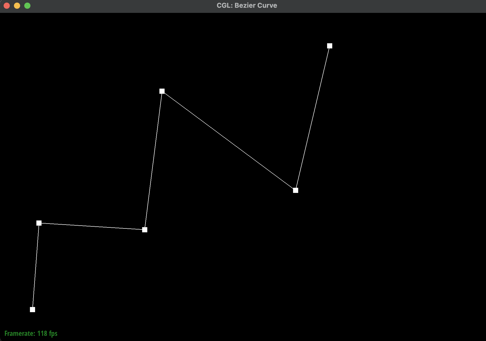
Show screenshots of each step / level of the evaluation from the original control points down to the final evaluated point. Press E to step through. Toggle C to show the completed Bezier curve as well.
|
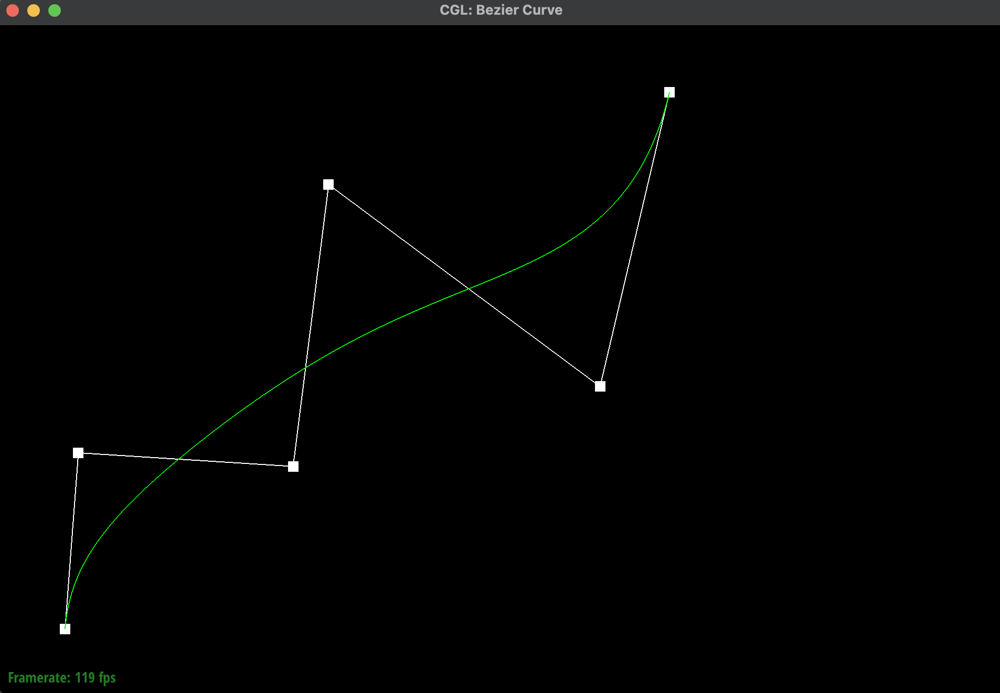
Level 0
|
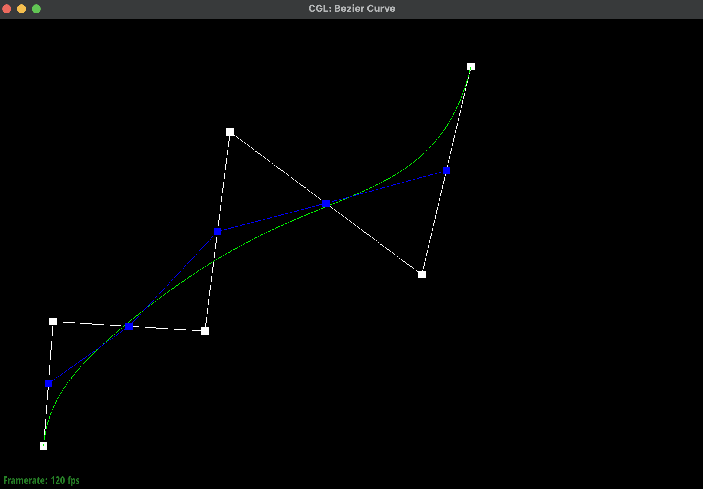
Level 1
|
|
Level 2
|
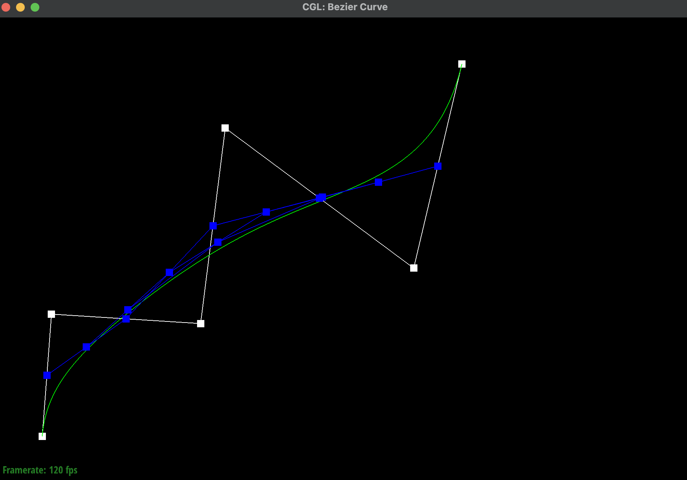
Level 3
|
|
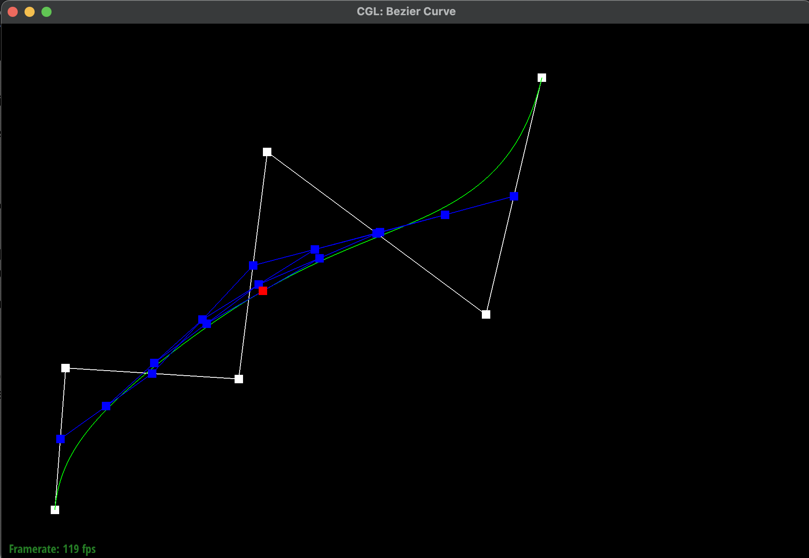
Level 4
|
Show a screenshot of a slightly different Bezier curve by moving the original control points around and modifying the parameter \(t\) via mouse scrolling.
Here we can see the same bezier curve as in the previous images, but with the value of the interpolation parameter t modified, and in the second image with the control points moved around. In these two images we can see the range of how the control points can effect the resulting curve, as well as how the parameter can result in slight variations. It is also worth noting that our very zig-zagged original curve is not very conducive to an interesting Bezier curve. We mostly get a line that goes through the control points rather than following them closely because we are interpolating closer to the center.
Part 2: Bezier Surfaces with Separable 1D de Casteljau
Briefly explain how de Casteljau algorithm extends to Bezier surfaces and how you implemented it in order to evaluate Bezier surfaces.
The De Casteljau algorithm extends fairly seamlessly to Bezier surfaces, in the first part of the project we ran the algorithm across a list of points and inserted new points inbetween. For surfaces, it would be defined by a matrix of points rather than vectors, but this just means that we can isolate each of the rows and run the algorithm on the individual rows. The result of the algorithm is always a singular point, so when we can take the results of every row and put them into a new vector, then run the algorithm on that resultant vector. We then end up with a single point that lies on the Bezier surface.
Show a screenshot of bez/teapot.bez (not .dae) evaluated by your implementation.
|
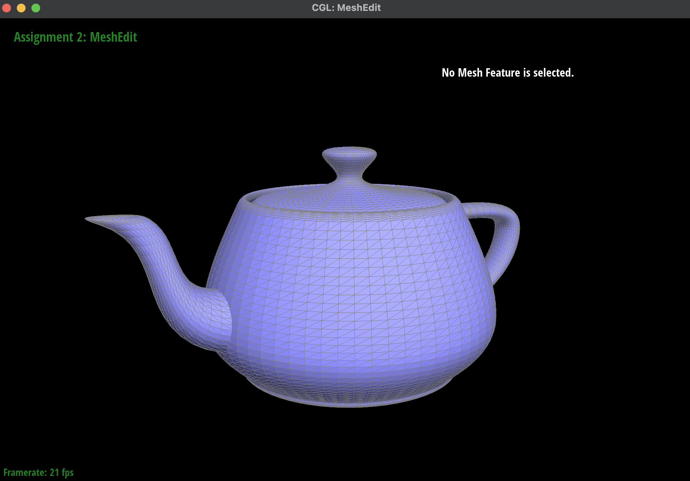
Our resultant Bezier surface Teapot
|
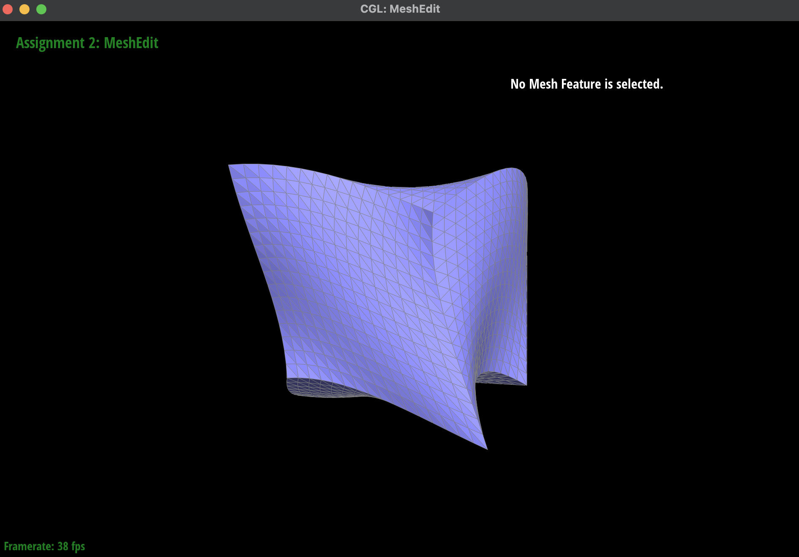
Bezier surface wavy cube
|
In the above two images, we have screenshots of two Bexier surfaces as evaluated by our algorithm.
Section II: Triangle Meshes and Half-Edge Data Structure
Part 3: Area-Weighted Vertex Normals
Briefly explain how you implemented the area-weighted vertex normals.
For this portion of the project, we implemented area-weighted vertex normals by taking advantage of the half-edge data structure that defiens objects. Half-edges are a way that we define meshes by having each edge associated with two half edges, one on either side going in opposite directions. This allows for us to traverse the mesh in a tree or graph like fashion, and using the half edge we can manipulate the corresponding edges, vertices, and faces. Our mesh is defined by triangles, and to find the normal of each triangle on our mesh we can iterate over the entire mesh in a while loop, and get the positions of two vertices. Crossing the two vertices will give us a vector normal to the triangle, that will already be weighted by its size because the two vectors defined by the points will be of varying sizes themselves. We can sum all of our normals together and then return a unit vector.
Show screenshots of dae/teapot.dae (not .bez) comparing teapot shading with and without vertex normals. Use Q to toggle default flat shading and Phong shading.
|
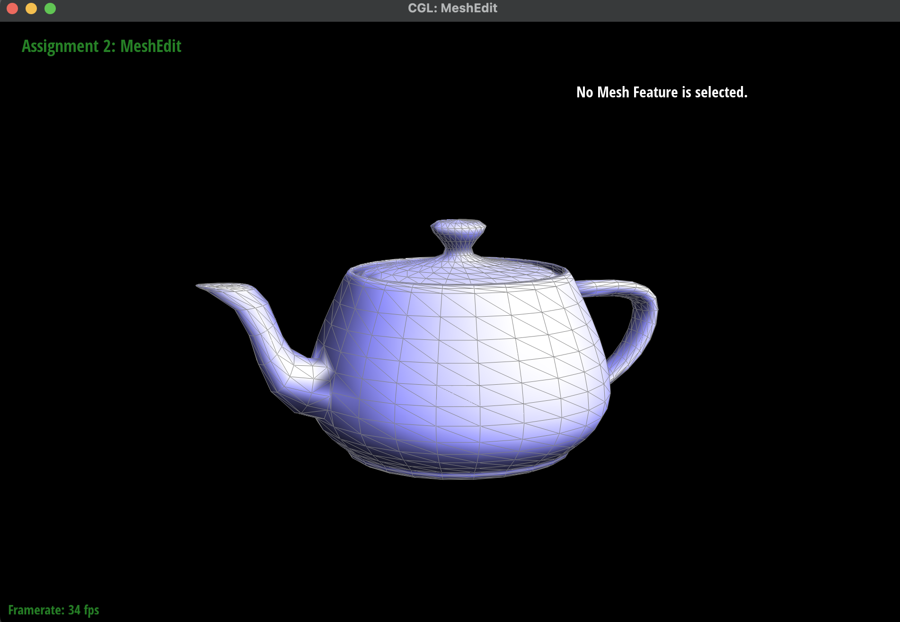
Our resultant mesh Teapot shaded smooth with our normals
|
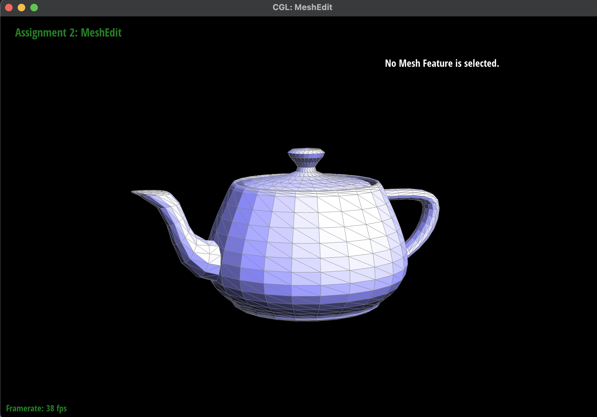
Unshaded mesh teapot
|
As we can see in the above images, by default we have one color for every single quad on the mesh. This results in a blocky looking shading that is very visibly discontinuous because the amount the teapot is shaded is dependent on how fine the geometry of our mesh is. Compared to that, using our area-weighted normals and phong shading we get something that looks much smoother. Doing this made me think about shading models other than Blinn-Phong, and what other type of data we would need to obtain in order to shade the model in a more realistic fashion.
Part 4: Edge Flip
Briefly explain how you implemented the edge flip operation and describe any interesting implementation / debugging tricks you have used.
In this section of the project, we implemented the edge flip operation where we flip the position of the middle edge within a quad defined by two triangles. We had to take care when implementing this operation because it would be very easy to miss connecting an edge or vertex somewhere along the process that would ruin the continuity of our geometry. The actual implementation of edge flips is fairly straightforward, there is no new geometry added so all we have to do is take all of the existing vertices, edges, half-edges, and faces, and reorient them such that the middle edge connects the two points opposing those it originally did.
Show screenshots of the teapot before and after some edge flips.
|
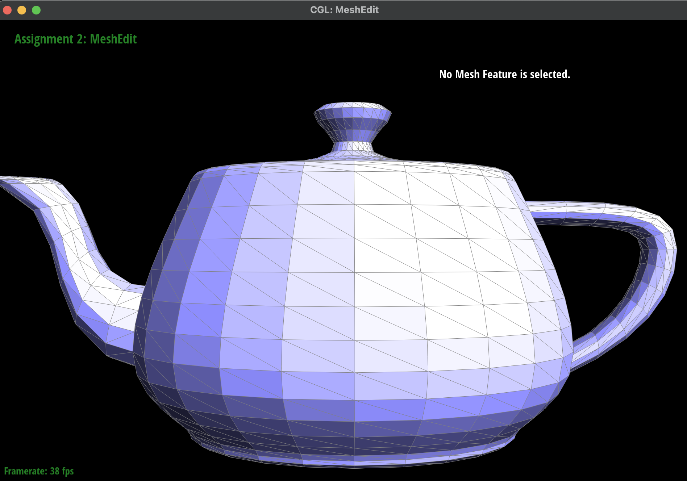
Original Teapot Mesh
|
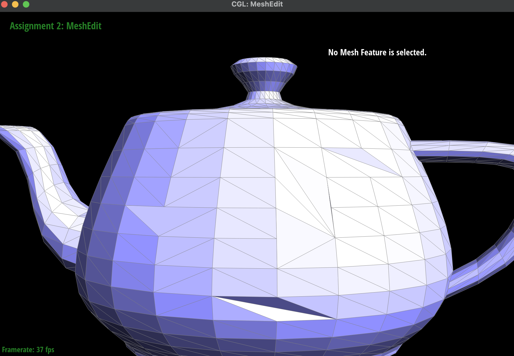
Teapot After Edge Flips
|
In the image on the left above, we can see the original teapot mesh. Notice that, in general, it is made out of many parallel lines and is consistent in the direction that all of the edges go in. On the right I flipped some of the edges to see the result of the function. The row on the left is flipped such that the diagonal lines within the quads go in the opposite direction, but we can see that the actual quads themselves are the exact same shape in this section. All of the quads are fully flat (likely because the model was triangularized after the fact), so as expected, there is no difference after flipping. However, if we look at the top right and bottom middle sections we can see a dent as a result of a more destructive flip, when we flip the edge that connects two quads. This operation is reversible but it helps us view when a flip may or may not affect the hull of the geometry.
Write about your eventful debugging journey, if you have experienced one.
My process implementing this function was fairly smooth overall, I took the advice of writing down the original vertices, edges, half-edges, and faces, and then drawing what they would look like transformed after a flip. This made it very straightforward to cross-check my implementation with the intended result.
Part 5: Edge Split
Briefly explain how you implemented the edge split operation and describe any interesting implementation / debugging tricks you have used.
The edge split operation was slightly trickier to implement than edge flips, although they were similar overall. Edge splits work by taking an edge, creating a new vertex in the center of the edge, and then connecting the two other points of the triangles connected to that edge and creating two new vertices that both connect to the middle vertex. This means that overall, we have to add the following: one new vertex, six new half-edges, three new edges, and two new faces. I took a very similar approach to how I planned out edge split when doing this function, and drawing out where all the points should go was very useful when implementing.
Show screenshots of a mesh before and after some edge splits.
|
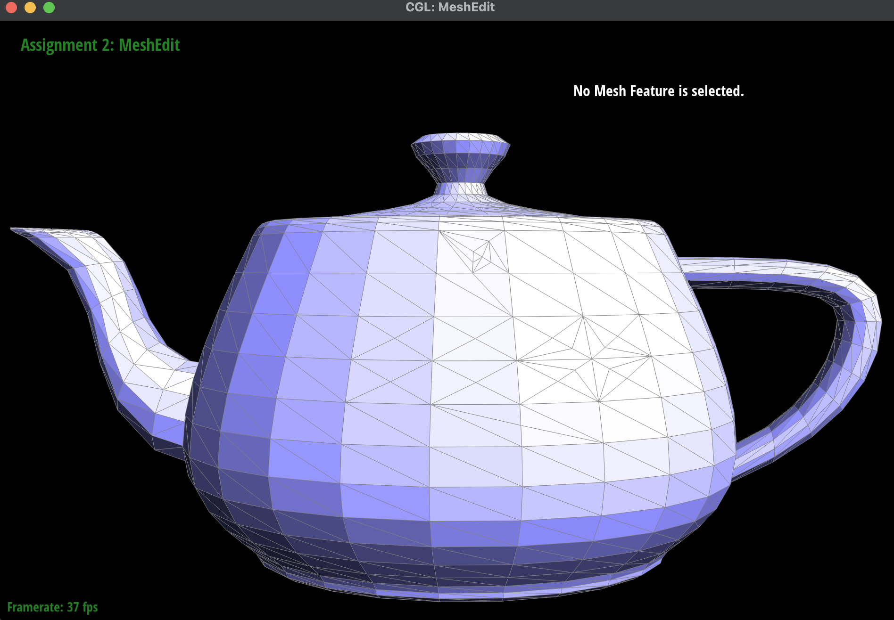
Teapot After Edge Splits
|
Above we see some of the geometry on our teapot after a couple edge splits at varying locations. We can compare the original quads on the left side to the splits in the center, and notice that similar to the edge flip operation, because the quads are completely flag, the edge split will produce an X shape of edges on the quad but not actually change any of the geometry. We also see the result of successive edge splits on the top and on the right. In each instance we can fairly easily see where the two new edges were added, and where the old whole edge that was split into two edges was.
Show screenshots of a mesh before and after a combination of both edge splits and edge flips.
|
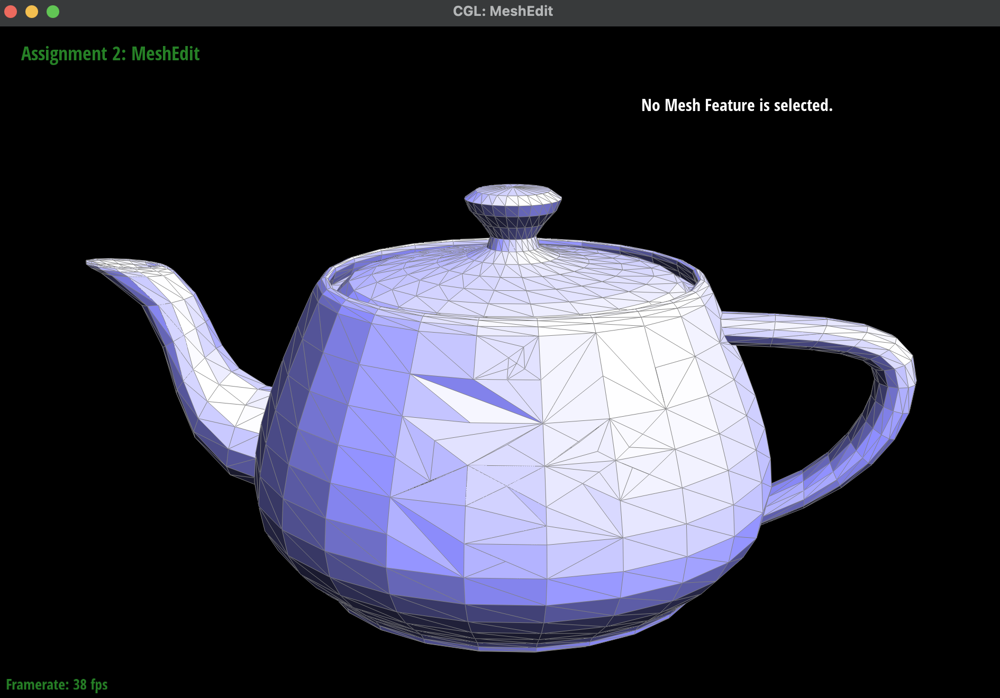
Teapot After Edge Splits and Flips
|
In the above image, we see an example of the teapot after some edge splits and edge flips. At this point we can see a bit of how much the combination of the two functions can change the overall geometry of the mesh, and we will see the full extent of that in the next section. It is also worth noting that the edge flips are always a non-destructive operation, because they can be undone and the mesh will be exactly as it previously was; but this is not true for edge splits.
Write about your eventful debugging journey, if you have experienced one.
I did run into a hiccup for a while where when I would split an edge, and then flip the top right edge it would produce a hole in the mesh. I knew that this had to be a problem within one of a few edges because it did not happen to the other three resultant edges of the split, so I went into the mesh viewer and ensured that all of the twin half-edges matched. To no surprise, I found one half-edge that did not have the correct corresponding twin, and it turned out to be the result of a copy paste that I did not change. Using the debug function to print all of the connections likely also would have sufficed for this.
If you have implemented support for boundary edges, show screenshots of your implementation properly handling split operations on boundary edges.
N/A
Part 6: Loop Subdivision for Mesh Upsampling
Briefly explain how you implemented the loop subdivision and describe any interesting implementation / debugging tricks you have used.
The loop subdivision method takes a couple steps, although I mostly followed what was described within the project spec. First, we iterate over all of the original edges of the mesh, mark that they have not been visited, and calculate what their position will be by weighting the position with that of the surrounding edges. Then, do the same for all of the original vertices. After that we go over the mesh's edges again and split all of the edges that were part of the original mesh, this ensures that we do not go into an infinite loop. Then, we flip any of the newly subdivided edges that connect an old and a new vertex, this forms the new triangles on our mesh. Finally, we update the positions of each of the vertices by swapping the old position with the new one that we calculated earlier, we can also mark all of the vertices as not new because this is now the "full" mesh. Overall I think this implementation was straightforward given all of the resources in the spec, and mostly hinged on doing parts four and five correctly.
Take some notes, as well as some screenshots, of your observations on how meshes behave after loop subdivision. What happens to sharp corners and edges? Can you reduce this effect by pre-splitting some edges?
|
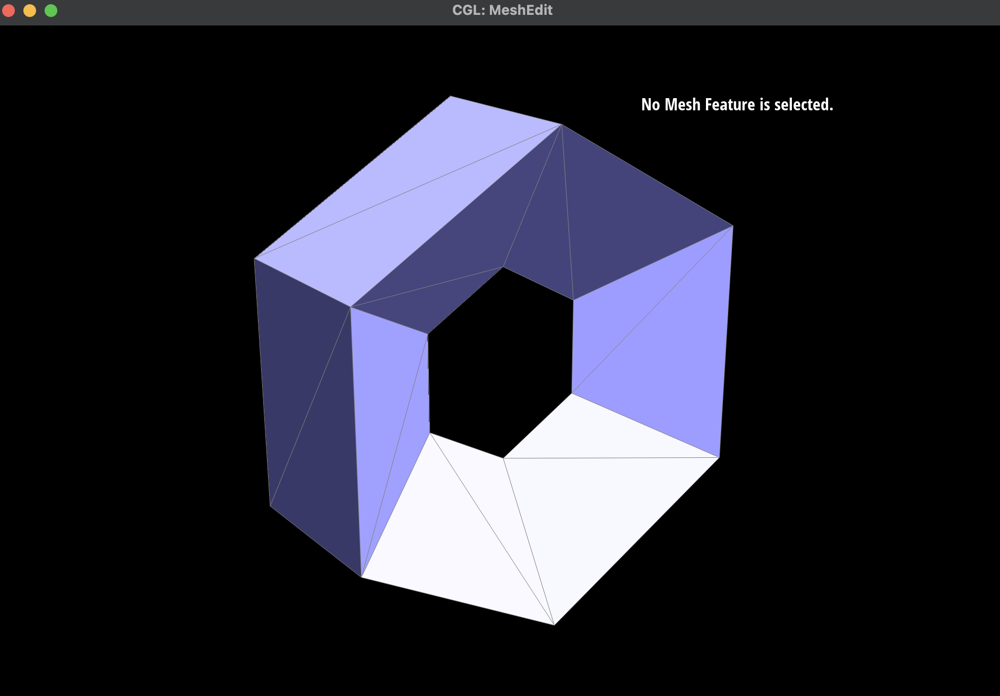
Original Torus Mesh
|
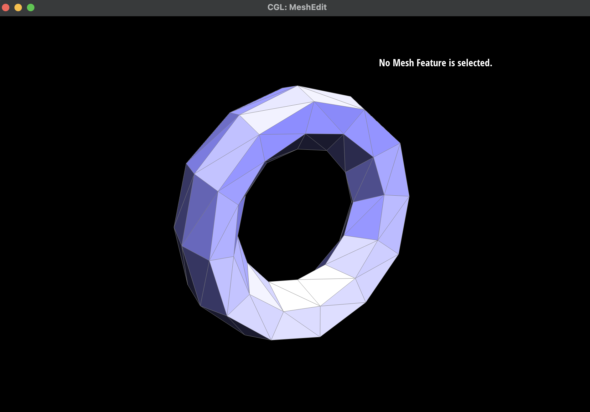
Torus After one Subdivision
|
|
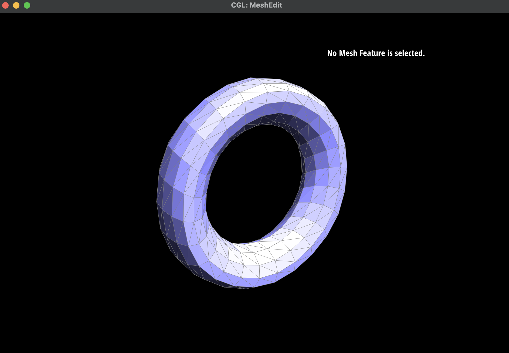
Torus after Two Subdivisions
|
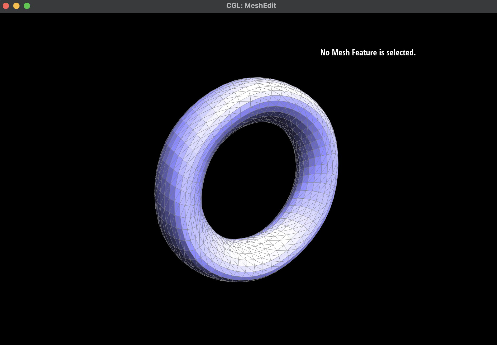
Torus After Three Subdivisions
|
Here we can see the effects of subdividing our torus mesh. Originally it has quite a few sharp corners, and very few vertices. After each subdivision level, our sharp corners get averaged out with all of the surrounding edges and vertices so they slowly get smoother and smoother. We are only averaging with the directly incident mesh elements so the overall shape of the torus remains the same, although I can definitely see a case where some detail is lost. For example in this case, the hole in the center of the torus gets noticeably larger, we will tackle how to prevent somethings like this in the next section.
Load dae/cube.dae. Perform several iterations of loop subdivision on the cube. Notice that the cube becomes slightly asymmetric after repeated subdivisions. Can you pre-process the cube with edge flips and splits so that the cube subdivides symmetrically? Document these effects and explain why they occur. Also explain how your pre-processing helps alleviate the effects.
|
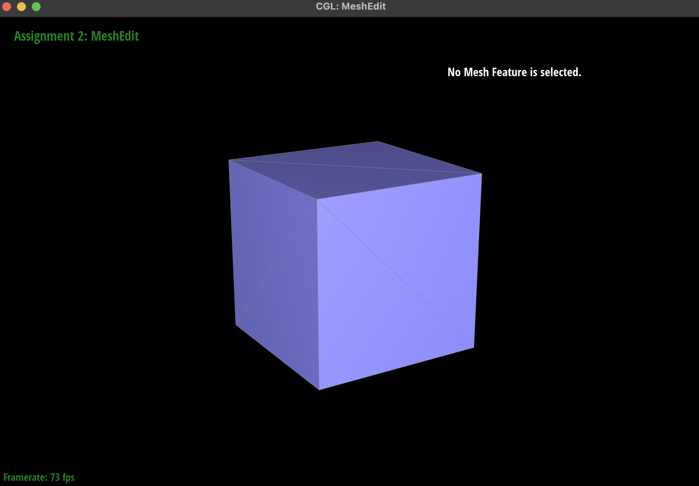
Original Cube Mesh
|
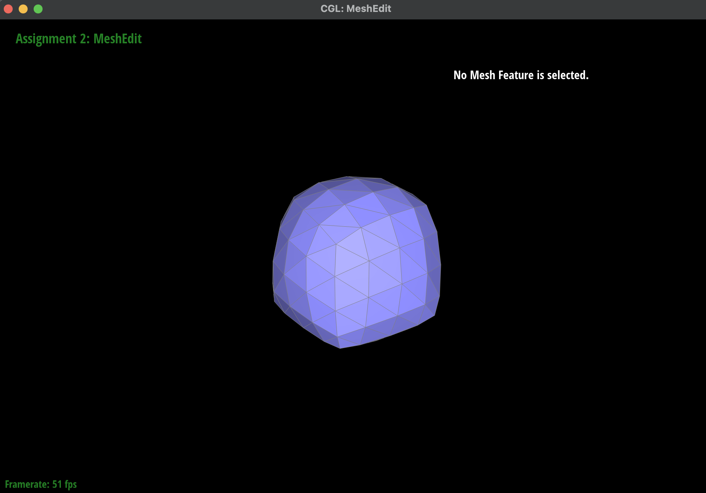
Cube After Two Subdivisions
|
|
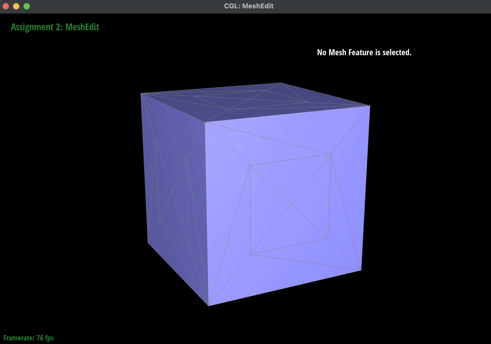
Pre-Split Cube Mesh
|
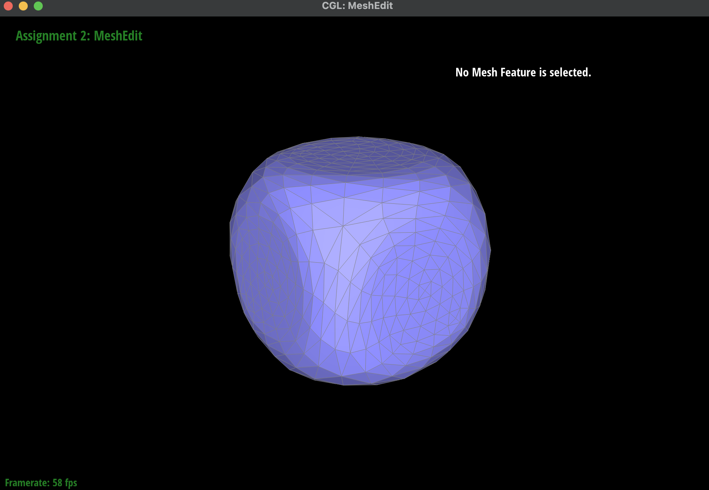
Split Cube After Two Subdivisions
|
As seen above, pre-processing the cube definitely can change the results of subdivision. Visibly, we are starting with more geometry so we will also end with more geometry, but the main difference comes from the fact that because we are starting with denser geometry, the act of averaging the positions within the subdivison function will change each of the vertices lesser than originally. Intuitively, this is like adding duplicates of a number in a list of numbers that we are averaging in order to skew the result more towards that. We now have many more edges that are all at the same level as our original edge, so the final subdivided cube has visibly flat faces unlike the original subdivided cube. Overall, any effects seen here are done by subtly changing what values we are actually averaging or smoothing out towards within our subdivion, along with having more geometry to start with. This operation is fairly common in 3D software, where a user can insert edge loops into a mesh such that when the mesh is being subdivided, we have additional geometry in specific areas that we can control so the result of subdividing is more malleable.
If you have implemented any extra credit extensions, explain what you did and document how they work with screenshots.
N/A